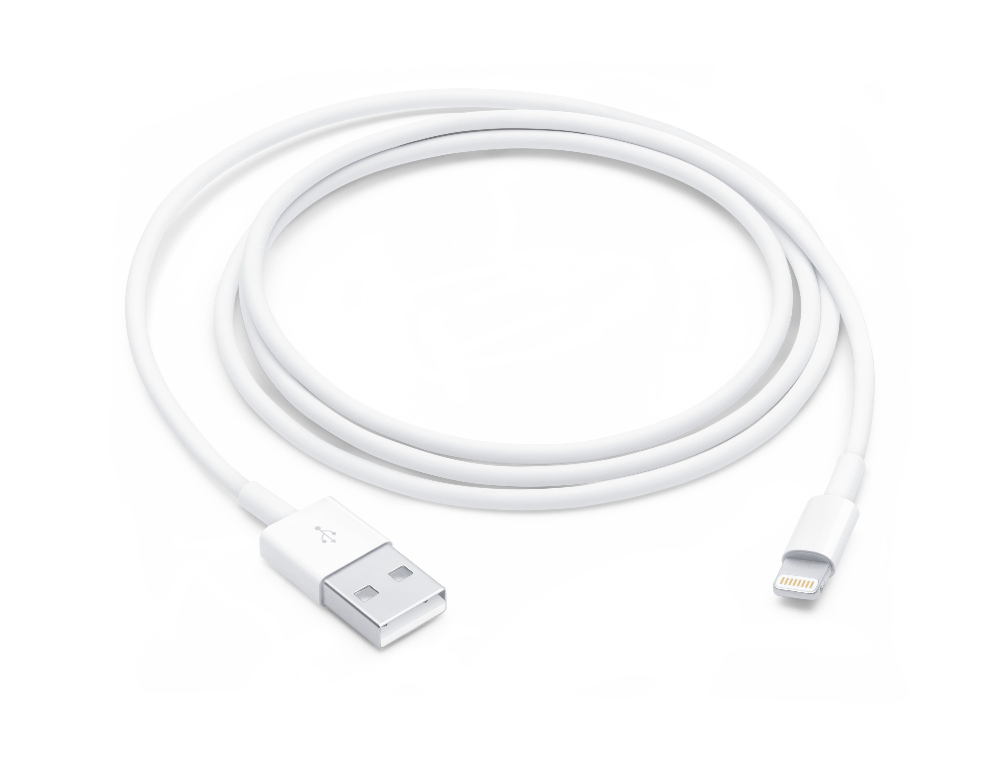

MDM Bypass
A way to bypass/remove MDM
The purpose of this tutorial is solely to demonstrate the process of bypassing MDM for educational purposes. Please comply with local laws and terms of use. Author takes no responsibility for any damage or consequences resulting from device damage or any actions taken to bypass MDM.
The Things You Need To Prepare
(Using Computer)

USB cable (Transfering Data)
iTunes (Backup)
iBackupBot (Remove/Bypass)
Steps
1. Connect your USB cable to the iPad and computer
2. Launch iTunes
3. Press the 'iPad' button
4. Backup your IPad
**Enter your iPad password if you have**
Steps after backup
1. Launch iBackupBot
2. Press the 'OK' button.
3. Press the '+' button.
4. Go to the 'System Files' directory.'
5. Scroll down until you have find the
'SysSharedContainerDomain-systemgroup.com.apple.configurationprofiles'
6. Delete all the files in the 'Library' directory (except Library)
Steps after deleted directory
1. Go to the 'System Files' directory.'
2. Right click and choose 'Restore to device'
3. Press the 'OK' button
4. Press the 'OK' button without any changes
**Don't change anything above**
5. Waiting the restore of IPad
6. Finish!
Github link